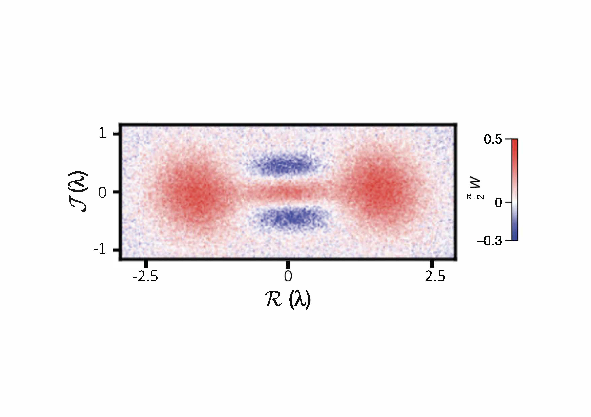
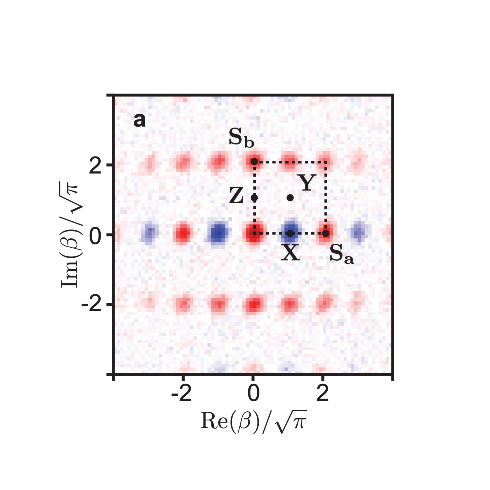
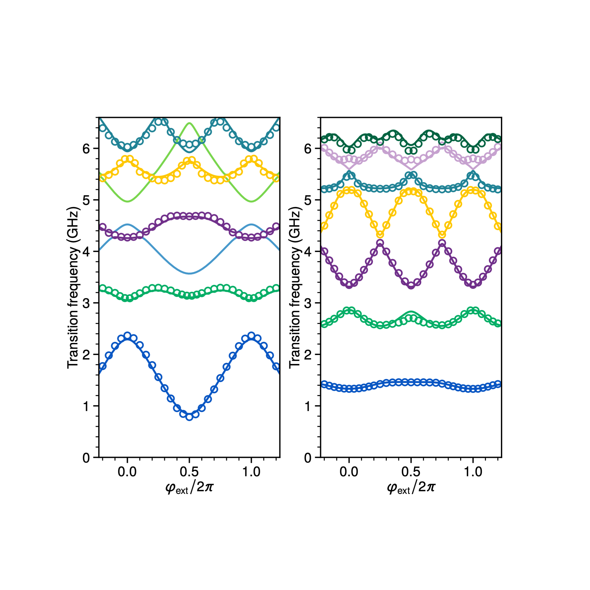
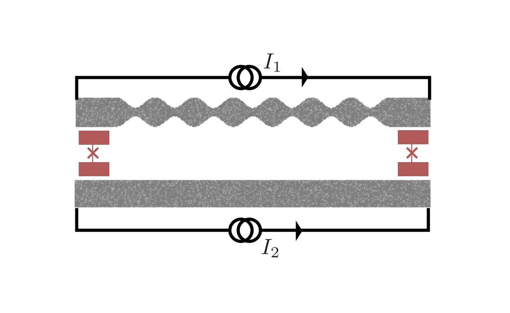
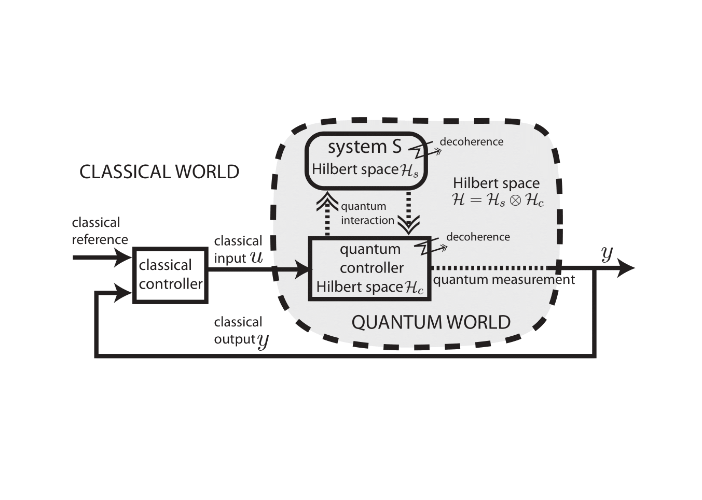

Over the last few years we have developed the theory and experimental implementation of a new paradigm for quantum computing. Usually, a qubit is encoded in two energy levels of a system such as an ion or a spin. We take an orthogonal direction. We encode a logical qubit in a harmonic oscillator, which has an infinite-dimensional Hilbert space, and can therefore replace a register of multiple physical qubits, thus reducing the hardware overhead required for quantum error correction. This logical qubit is called a “cat qubit” since Schrödinger cat states host the two qubit states. This qubit is rf-powered, continuously exchanging photons with a reservoir. This approach challenges the intuition that a qubit must be isolated from its environment. Instead, the reservoir acts as a feedback loop which continuously and autonomously corrects against errors. This correction takes place at the level of the quantum hardware, and reduces the need for error syndrome measurements which are resource intensive.
Refs: PRL2013, NJP2014, Science2015, PRX2018, PRX2019, NaturePhys2020, PRXQ2023, Nature2024
Experiments: Armelle & Adrien. Supervisor: Zaki. In collaboration with Alice & Bob.

In 2001, Gottesman, Kitaev and Preskill (GKP) proposed a hardware-efficient instance of a non-local qubit: a superposition of position eigenstates that forms grid states of a single oscillator. This great proposal has remained out of reach of experimental implementation up until very recently, since it requires an exquisite level of control over a quantum oscillator. In this project we experimentally prepare GKP code states through feedback protocols and highly non-linear dissipation mechanisms in a superconducting microwave cavity playing the role of the oscillator.
Refs: Nature2020
Experiments: Louis & Brieuc. Supervisor: Philippe.

An ongoing quest in quantum information science is to build a circuit that hosts a degenerate ground state manifold that encodes and protects quantum states. A particularly appealing approach is to combine a generalized Josephson element with the so-called quantum phase-slip element, the dual of the Josephson junction. Such a circuit would encode information in the form of GKP states that are protected at the Hamiltonian level, circumventing the need for error syndrome measurements and feedback. In this project we research exotic arrangements of superconducting materials to experimentally implement such a protected qubit.
Refs: PRX 2022, ARXIV 2023
Experiments: Erwan & Alvise. Supervisor: Zaki. In collaboration with Clarke Smith (Google), Benoit Douçot (Sorbonne), Alex Petrescu (Mines) & Marius Villiers (Delft).

Qubits need filtering and signal processing components. The already existing commercial devices have enabled a fast growth of the research field but brought their inconvenients, their performance being limited. It is one of the major obstacles for reliable and large-scale quantum computing. In this project we aim to develop a new range of components, on-chip, with unmatched characteristics. The project will unfold in three steps : filters development, then tunable couplers, and finally non-reciprocal elements.
Refs: ARXIV 2024
Experiments: Anthony & Matthieu. Supervisor: Philippe.

Making a system robust and stable to the influence of external perturbations is one of the core problems in control engineering. The goal of this project is to address the above question from the angle of control systems. We elaborate theoretical control methods to analyse and design feedback schemes adapted to the quantum world. We develop mathematical methods to challenge the inherently invasive and stochastic aspects of quantum measurements. Relying on the development of original mathematical perturbation techniques specific to open quantum systems, we propose a new hierarchical strategy for quantum feedback modeling, design and analysis.